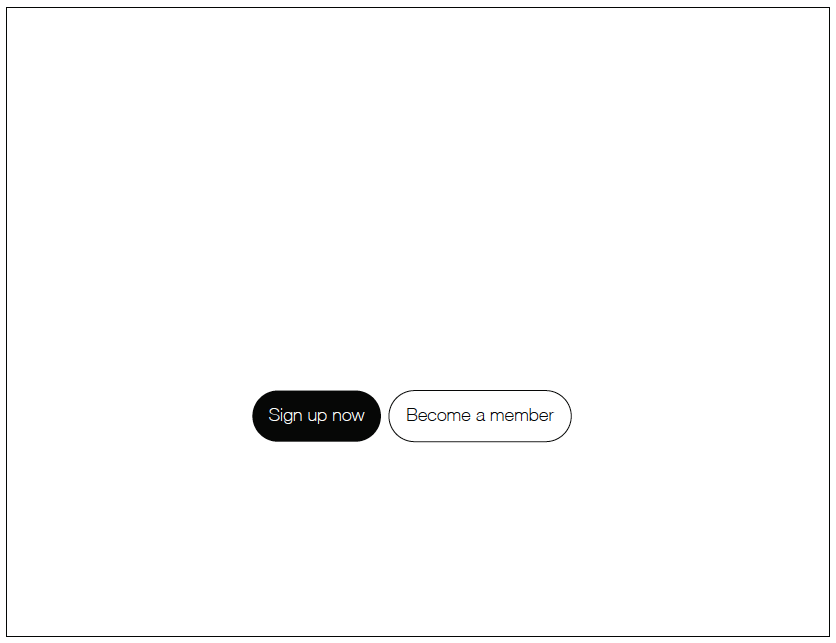
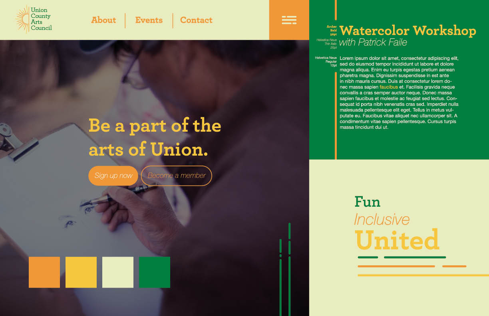

Solution
This page includes the solution to UCAC, in the form of a Call to Action, and a Style Tile.
Call To Action

What my users need to do is sign up for classes and events. “Sign up now” will lead them to a page of classes or events. “Become a member” will be next to it, but less emphasized, leading to a page with a sign up form for membership.
Style Tile
This logo is the perfect stepping stone to a more clarified and cohesive site for UCAC. By using the same sun image as the original "logo", I was still able to maintain the original sites personality, but upgrading it to look more professional.

I used my style tile as an opportunity to again, maintain UCAC's personality while at the same refreshing their look. I took away the red and replaced it for a gold yellow, and orange yellow. I darkened the green to allow the color to be more flexibly used. I also took inspiration from the sun element and used the line stylization as the texture for other elements on the page, such as the hamburger element.